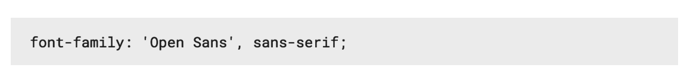

Lorsque l'on utilise une font, il faut s'assurer que tous les utilisateurs peuvent la voir
Soit l'utilisateur possède déjà la font sur son ordinateur, soit il doit la télécharger en même temps que le site
L'at-rule @Font-face en CSS3 permet de faire cela
Compatibilité
Can I use
@font-face {
font-family:'myFont';
src:url(myfont.ttf);
}
p {
font-family:'myFont';
}
@font-face peut contenir plusieurs propriétés qui vont permettre de définir le nom, le fichier source, le poids et le style de la police
/* Regular normal */
@font-face {
font-family:'myFont';
src:url(myfont-regular.ttf);
font-weight:400;
font-style:normal;
}
Il faut utiliser @font-face pour chaque version de la font que l'on souhaite utiliser sur le site (normal non-italic, normal italic, gras non-italic, gras italic, etc.)
/* Regular normal */
@font-face {
font-family:'myFont';
src:url(myfont-regular.ttf);
font-weight:400;
font-style:normal;
}
/* Regular italic */
@font-face {
font-family:'myFont';
src:url(myfont-regular-italic.ttf);
font-weight:400;
font-style:italic;
}
/* Bold normal */
@font-face {
font-family:'myFont';
src:url(myfont-bold.ttf);
font-weight:700;
font-style:normal;
}
/* Bold italic */
@font-face {
font-family:'myFont';
src:url(myfont-bold-italic.ttf);
font-weight:700;
font-style:italic;
}
Le nom que vous désirez
Ne pas oublier les ' ou " si le nom contient des espaces
Le fichier
' ou " non obligatoire
Le poids de la font
Le style de la font
Il existe plusieurs formats de font et les navigateurs ne les supportent pas tous
Il est nécessaire de fournir les différentes formats au navigateurs
/* Regular normal */
@font-face {
font-family:'myFont';
src:url(myfont-regular.eot);
src:url(myfont-regular.eot?#iefix) format('embedded-opentype'),
url(myfont-regular.woff2) format('woff2'),
url(myfont-regular.woff) format('woff'),
url(myfont-regular.ttf) format('truetype'),
url(myfont-regular.svg#myFont) format('svg');
font-weight:400;
font-style:normal;
}
/* Regular italic */
@font-face {
font-family:'myFont';
src:url(myfont-regular-italic.eot);
src:url(myfont-regular-italic.eot?#iefix) format('embedded-opentype'),
url(myfont-regular-italic.woff2) format('woff2'),
url(myfont-regular-italic.woff) format('woff'),
url(myfont-regular-italic.ttf) format('truetype'),
url(myfont-regular-italic.svg#myFont) format('svg');
font-weight:400;
font-style:italic;
}
/* Bold normal */
@font-face {
font-family:'myFont';
src:url(myfont-bold.eot);
src:url(myfont-bold.eot?#iefix) format('embedded-opentype'),
url(myfont-bold.woff2) format('woff2'),
url(myfont-bold.woff) format('woff'),
url(myfont-bold.ttf) format('truetype'),
url(myfont-bold.svg#myFont) format('svg');
font-weight:700;
font-style:normal;
}
/* Bold italic */
@font-face {
font-family:'myFont';
src:url(myfont-bold-italic.eot);
src:url(myfont-bold-italic.eot?#iefix) format('embedded-opentype'),
url(myfont-bold-italic.woff2) format('woff2'),
url(myfont-bold-italic.woff) format('woff'),
url(myfont-bold-italic.ttf) format('truetype'),
url(myfont-bold-italic.svg#myFont) format('svg');
font-weight:700;
font-style:italic;
}
Pour nous simplifier la vie, on utilise des générateurs de font-face
Choisissez une font et la rajoutez la à la collection
Une fois les fonts sélectionnées, cliquez sur la modale en bas
Dans l'onglet customize, choisissez les variantes de la font
Ne prenez que ce qui est vraiment nécessaire
Dans l'onglet embed, récupérez le code <link> et ajouter le dans le <head>
Toujours dans l'onglet embed, récupérez le code CSS pour utiliser la font

Il est possible de modifier le rendu des fonts
Par défaut, elles sont épaisses, surtout sur Firefox OSX
La différence dépend de la font et de la densité de pixel de l'écran
body {
-webkit-font-smoothing:antialiased;
-moz-osx-font-smoothing:grayscale;
}
La déclaration @font-face parfaite (Paul irish)
WhatFont (Plugin Chrome)
www.24joursdeweb.fr (optimiser le chargement/affichage des polices)